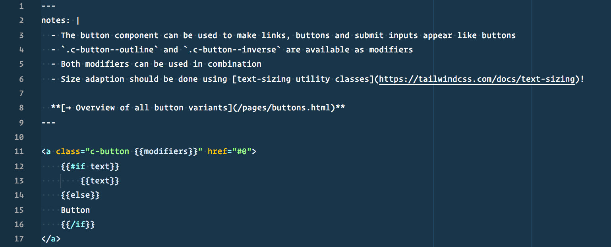

Frontend
Workflow
Ziele
Konsistenz
Speed of Development
Wartbarkeit
Lesbarkeit
Premature Abstraction
Cognitive Overload
Magic Numbers
Keine Angst!
Die Sorge vor unvorhergesehen Auswirkungen durch nderungen minimieren
Onboarding
Neue Entwickler mssen mit wenig Aufwand in Projekte/Teams eingebracht werden knnen
Utility First
why?
Dev Speed
Entwicklung im HTML: kein Kontext-Switch
Vermeidung frhzeitiger Abstraktion
Gestaltung im Browser mglich
App Speed
Render Performance
Niedrige Spezifitt
File Size
Immutability
Declare a property once and you should be damn sure its never going to get overwritten. Fuck specificity.Apply the class you want margin-bottom, say and rest assured that no one elses CSS is going to override it. The problem here is that CSS isnt immutable, but be clever in your implementation and its kind of like immutability.
-- Jon Gold
Hello, my name is
There are only two hard things in Computer Science: cache invalidation and naming things.
-- Phil Karlton
Bekannter Workflow?
-
Namen finden
-
Sass-Komponente anlegen & einbinden
-
Styling schreiben
-
Feststellen, dass die Komponente an anderer Stelle bentigt wird, aber mit blauem Hintergrund
- BEM-Modifier implementieren
.c-thing--bg-blueoder - Komponente untern neuem Namen duplizieren
.c-blue-thing
- BEM-Modifier implementieren
-
Repeat
.c-thing { } .c-thing--header { margin-top: 1rem; } .c-thing--subtle { background-color: #dedede; } .c-thing--big { font-size: 2rem} .c-thing--positive { color: green; } .c-thing--negative { color: red; }
How about instead?
<div class="c-thing mt-4"> <div class="c-thing bg-grey-light"> <div class="c-thing text-xl"> <div class="c-thing text-green"> <div class="c-thing text-red">
Ich muss nicht weniger ber Naming nachdenken
Ich kann nur HTML schreiben & committen
Ich fhre keine Magic Numbers () ein Konsistenz
-
Layouts erst mit Utilities umsetzen
-
Komponenten extrahieren wenn Muster sich wiederholen.
Abstraktion in Komponente mit @apply
Tailwind CSS
Tailwind provides highly composable, low-level utility classes that make it easy to build complex user interfaces [..]
Tailwind CSS
Utility Framework als PostCSS Plugin:
Unabhngig von CSS-Prprozessoren
Konfigurier- und erweiterbar mit JavaScript
Alle Utilities anpassbar
Ntzliche Helper-Funktionen
Tailwind Beispiel
<div class="bg-white mx-auto max-w-sm shadow-lg rounded-lg overflow-hidden"> <div class="sm:flex sm:items-center px-6 py-4"> <img class="block h-16 sm:h-24 rounded-full mx-auto mb-4 sm:mb-0 sm:mr-4 sm:ml-0" src="https://avatars2.githubusercontent.com/u/4323180?s=400&u=4962a4441fae9fba5f0f86456c6c506a21ffca4f&v=4" alt=""> <div class="text-center sm:text-left sm:flex-grow"> <div class="mb-4"> <p class="text-xl leading-tight">Adam Wathan</p> <p class="text-sm leading-tight text-grey-dark">Developer at NothingWorks Inc.</p> </div> <div> <button class="text-xs font-semibold rounded-full px-4 py-1 leading-normal bg-white border border-purple text-purple hover:bg-purple hover:text-white">Message</button> </div> </div> </div>

Erste Reaktionen
-
So schlimm wie Inline Styles
-
Mllt das Markup voll
-
Nicht semantisch
Inline Styles vs Utility-First
Media Queries
<h2 class="text-md lg:text-lg>"
Pseudo-Elemente
<a class="bg-red hover:bg-blue>"
Konsistenz
/* Well defined options */ <h2 class="text-xl"></h2>" /* vs. Arbitrary Magic Numbers */ <h2 style="font-size: 3.2528rem"></h2>"
Unleserlich?
Utilities sind expressiv
<ul class="text-white bg-red p-4 mb-4">
Gewohnheiten ndern sich
Wer hat BEM sofort geliebt?
Unsemantisch?
Utilities beschreiben Styling
Inhalte beschreiben ist Aufgabe von HTML!
You clutter up your DOM with styling directives
This is true. But I don't have an argument for why that's bad other than that it is stylistically ugly. Which I agree with. But it's fast to render in the browser. And it also has helped me get dev teams to build responsive interfaces more quickly. And those are the things I care about. Dev velocity and application performance.
@mrmrs (Autor von Taychons)
Tailwind: @apply rule
<button class="bg-blue hover:bg-blue-dark text-white font-bold py-2 px-4 rounded"> Button </button>
.btn-blue { @apply .bg-blue .text-white .font-bold .py-2 .px-4 .rounded; } .btn-blue:hover { @apply .bg-blue-dark; }
Tailwind Media Query Syntax
<div class="bg-purple sm:bg-green md:bg-blue lg:bg-red">
screens: { 'sm': '30em', 'md': '48em', 'lg': '64em', 'xl': '75em', },
Optionen & Helper
options: { prefix: '', important: false, separator: ':', },
@responsive { }
@variants hover, focus { }
font-size: config('textSizes.xl')
Inverted Triangle CSS
(ITCSS)
Elements
Objects
Components
Elements
p { margin-top: 0; margin-bottom: 1.5em; }
grundlegendes Styling von HTML-Tags
sollte site-weit gltig sein
Objects
.o-container { max-width: 74rem; padding: 0 2rem; }
Definieren design-agnostisches Layout
Namespace: Prfix o-
z.B. Media Object, Kacheln, Grids, Container
Components
.c-card { background-color: #fff; box-shadow: 0 0 2rem rgba(0, 0, 0, .15); }
Gestaltete Komponenten
Namespace: Prfix c-
Dateien & Ordner
// Inject Tailwind's base styles (think of an enhanced normalize.css) @tailwind preflight; // Configuration: Variables used across the project @import 'configuration/settings'; // Tools: Mixins and functions used across the project, do not create any CSS output if not called @import 'tools/mappy-breakpoints'; // Elements: Styles that go directly on HTML elements, no classes or ids @import 'elements/body'; // Objects: Cosmetic free design patterns, e.G. containers, grid systems, tiles. @import 'objects/container'; // Components: Designed UI components @import 'components/button'; // Utilites provided by Tailwind @tailwind utilities;
Files
-
Lower Case
_card.scss -
Minus als Trennzeichen
_news-list.scss -
4 Spaces Indentation
.... -
Auf jeden Block folgt eine Leerzeile
-
Sass im SCSS-Style
-
Sass-Partials beginnen mit Underscore
_card.scss
Selektoren
Basis-Styling ber Element-Selektoren
Weiteres Styling ausschlielich ber Klassen
Spezifittskrieg vermeiden, Kaskade flach halten
IDs nur fr Sprung-Links und Target-Selector
JavaScript nur via data-attributes ansprechen
Don't
.c-product-teaser { div { + div { a { } } } h2 { } h3 { } p { } figure img { } div:not(:first-of-type) a:last-of-type { } div + div { a { } } figure img { } }
Schwer erfassbar
DOM muss prsent sein
Enge Kopplung ans Markup
Do
.c-product-teaser { } // Teaser Intro (= first column) .c-product-teaser__intro { } .c-product-teaser__title { } .c-product-teaser__text { } // Teaser Products (= second column) .c-product-teaser__products { } .c-product-teaser-products__image { } .c-product-teaser-products__title { } .c-product-teaser-products__link { }
Flach und Expressiv
Unabhngig von DOM-nderungen
Verstndlich ohne Wissen ber das Markup
Klassennamen
-
englisch
-
Lowercase BEM
-
Double-Dash Modifiers
-
kurz aber eindeutig
-
ber-spezifisch
Klassennamen
.c-detailspage |
.c-detail |
.c-fondscomparison-table |
.c-funds-list |
.c-product-teaser-with-background-image |
.c-product-teaser c-product-teaser--background-image |
.c-fondscomparison-hint |
.c-hint |
Nesting
Don't
.block { &__element { } }
Suche nach .block__element findet den Selektor nicht, daher:
Do
.block__element { }
Property Sort Order
Layout vor Dekoration:
Konformitt durch einheitliche Sass-Lint-Konfiguration
CSS & Sass Anti Patterns
Sass @extend
Sass Color Functions
Komponenten-Margins
Background Shorthand
margin: 0 auto
Avoid
Sass @extend
a.icon-listen-bl:hover, .event-related .box-title a:hover, .category-related .box-title a:hover, .readmore a:hover, .footer a:hover, .pagination a:hover, .news a:hover, .latest-tweet .date a:hover, .feature .box-header .title a:hover, .caption .title a:hover, .full-agenda-link a:hover, .article a:hover, .medialib-nav a:hover, .timeline-months a:hover, .Timeline .feature .box-footer a:hover, .news a:focus, .latest-tweet .date a:focus, .feature .box-header .title a:focus, .caption .title a:focus, .full-agenda-link a:focus, .article a:focus, .medialib-nav a:focus, .timeline-months a:focus, .Timeline .feature .box-footer a:focus { text-decoration: underline; }
Avoid: Sass Color Functions
.this { background-color: lighten($color-primary, 3.5%) } .that { background-color: lighten($color-primary, 3.2%) } .another { background-color: lighten($color-primary, 2.9%) }
Besser:
zentrale Farbdefintion = Konsistzenz
Avoid: Komponenten-Margins
.thing { margin-bottom: 2rem } .thing--other-margin { margin-bottom: 4rem }
Besser:
kontextneutrale Komponenten
Abstnde ber Utilty-Klassen
Avoid: Background Shorthand
background: red;
background-image: initial; background-position-x: initial; background-position-y: initial; background-size: initial; background-repeat-x: initial; background-repeat-y: initial; background-attachment: initial; background-origin: initial; background-clip: initial; background-color: red;
You should only ever do as little as you need to do and nothing more.
--Harry Roberts
Avoid: Margin: 0 auto fr horizontale Zentrierung
Besser:
margin-right: auto margin-left: auto
keine unerwnschten Nebenwirkungen auf vertikale Abstnde
Styleguide
Warum ein Styleguide?
FE unabhnig von BE
Schnelle Iterationen
Schnell prsentable Ergebnisse
Styleguide Skeleton
Ordner- und Dateistruktur
Tailwind CSS Setup
PurgeCSS
mappy-breakpoints
Ordner- und Dateistruktur
Styleguide im Browser
Templating im Styleguide
Komponenten mit Frontmatter dokumentieren
Komponenten als Partials aufbauen
Modifier und Utilities als Parameter bergeben
Seiten aus Komponenten zusammensetzen

Definition einer Komponente
Einsatz einer Komponente in einer Page
Tailwind einsetzen
Tailwind anpassen
PurgeCSS
toolkit.css 434 KB
toolkit.css 31 KB
Mappy Breakpoints
$breakpoints: ( 'sm': 480px, // 30em 'md': 768px, // 48em 'lg': 992px, // 62em 'xl': 1180px // 73.75em ); @include mappy-bp(sm md) { } // = @media screen and (min-width: 30em) and (max-width: 47.9375em)
Zentrale Breakpoint-Verwaltung in Sass-Map
Automatische Konversion px em
Max-Queries automatisch -1px
Further Reading
- CSS Utility Classes and "Separation of Concerns" von Adam Wathan
- In Defense of Utility First CSS von Sarah Dayan
- About HTML semantics and front-end architecture von Nicholas Gallagher
- CSS and Scalability von Adam Morse
- Rationalizing Functional CSS von Marcelo Somers
- Full re-write in 10 days with tachyons and functional CSS: A case study von Simon Vrachliotis
- Kiss My Classname: A Counterpoint von John Polacek
- Functional Programming, CSS, and your sanity von Jon Gold
- How is tachyons different from inline styles?
- CSS Shorthand Syntax Considered an Anti-Pattern von Harry Roberts
- Manage large CSS projects with ITCSS von Harry Roberts